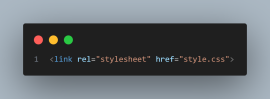
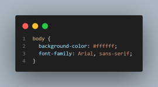
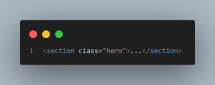
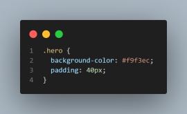
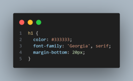
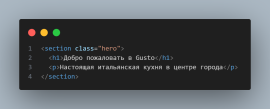
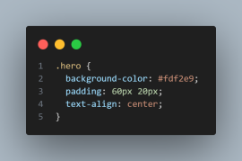

Добавим стиль: цвета, отступы, шрифты
На прошлом занятии ты создал структуру сайта с помощью HTML. Теперь самое время сделать сайт красивым. Мы начнём изучать CSS — язык, с помощью которого оформляются веб-страницы: добавляются цвета, шрифты, отступы, фоны и всё, что делает сайт визуально приятным и современным.
Когда ты заходишь на любой сайт — ты видишь HTML и CSS в действии.
❓ Что такое CSS
CSS (Cascading Style Sheets — каскадные таблицы стилей) — это язык, с помощью которого мы задаём внешний вид HTML-элементов. Он не добавляет новых блоков на сайт, но полностью управляет их стилем: цветами, размерами, отступами, расположением и так далее.
❓ Как подключить CSS
Обычно стили записываются в отдельный файл с расширением .css. Это удобно: HTML остаётся читаемым, а стили — сгруппированными в одном месте.
📁 В нашем проекте уже есть файл style.css, но нужно убедиться, что он подключён к HTML.
Открой свой файл index.html и в блоке head добавь строку:

✅ Теперь браузер знает, где искать стили.
💥 Селекторы в CSS
Чтобы применить стиль к определённым элементам, мы используем селекторы. Есть несколько типов, но начнём с двух простых:
1. Селектор по тегу — применяет стиль ко всем элементам с определённым тегом:

2. Селектор по классу — применяется к элементам с определённым классом. В HTML класс задаётся так:

А в CSS стиль для него пишется так:

Точка перед именем класса в CSS означает, что мы применяем стиль к классу.
🎁 Полезные свойства CSS
• color — задаёт цвет текста
• background-color — цвет фона
• font-family — шрифт
• padding — внутренние отступы
• margin — внешние отступы
💡 Пример:

💎 Стилизация hero-секции
Допустим, ты хочешь выделить первый блок с заголовком на странице (его называют hero-блок).
🧑💻 Оберни его в HTML в секцию и задай ей класс:

Теперь добавь стиль в style.css:

🎉 Мы задали фоновый цвет, отступы и выравнивание по центру. Сайт уже начинает выглядеть как настоящий!